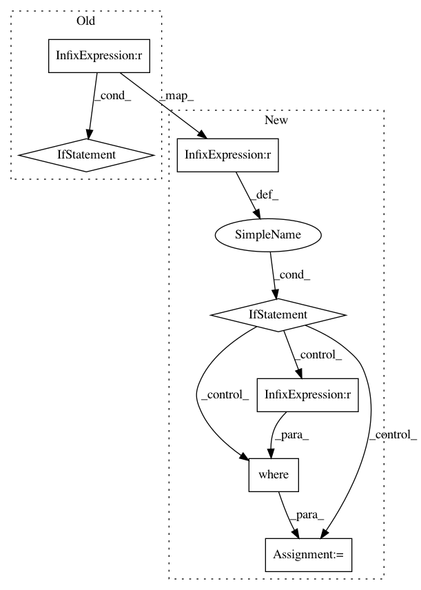

3d535702dc92b55d6bc8cc0c02d45d98c439b733,enthought/chaco/scatterplot.py,ScatterPlot,_gather_points_old,#ScatterPlot#,171
Before Change
indices = ds.metadata["selections"]
point_mask = point_mask[indices]
points = transpose(array((index[indices], value[indices])))
elif ds.metadata.get("selection_mask", None) is not None:
point_mask &= ds.metadata["selection_mask"]
else:
continue
After Change
// we"ll have to define a small algebra about how they are combined,
// and this will fall out...
for ds in (self.index, self.value):
if ds.metadata.get("selection_masks", None) is not None:
for mask in ds.metadata["selection_masks"]:
point_mask &= mask
indices = where(point_mask == True)
points = transpose(array((index[indices], value[indices])))
elif ds.metadata.get("selections", None) is not None:
indices = ds.metadata["selections"]
point_mask = point_mask[indices]
points = transpose(array((index[indices], value[indices])))
else:
continue
self._cached_selection_point_mask = point_mask
self._cached_selected_pts = points
self._selection_cache_valid = True
break
In pattern: SUPERPATTERN
Frequency: 3
Non-data size: 7
Instances
Project Name: enthought/chaco
Commit Name: 3d535702dc92b55d6bc8cc0c02d45d98c439b733
Time: 2008-12-01
Author: bhendrix@651a555e-23ca-0310-84fe-ca9f7c59d2ea
File Name: enthought/chaco/scatterplot.py
Class Name: ScatterPlot
Method Name: _gather_points_old
Project Name: J535D165/recordlinkage
Commit Name: 702899ea0aeb57b5761b85c43d1416ca81d4da00
Time: 2019-03-14
Author: jonathandebruinos@gmail.com
File Name: recordlinkage/compare.py
Class Name: String
Method Name: _compute_vectorized
Project Name: snorkel-team/snorkel
Commit Name: 0514d4b6de97d652e6cd99c7b557018890a6ec99
Time: 2017-06-26
Author: ajratner@gmail.com
File Name: snorkel/learning/disc_learning.py
Class Name: TFNoiseAwareModel
Method Name: train